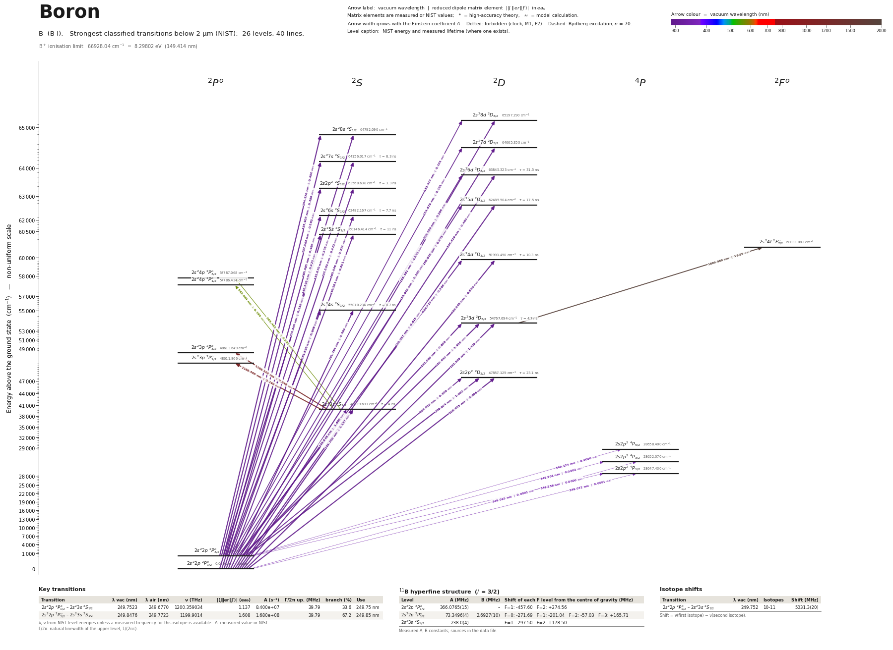

Boron energy level diagram
Energy levels and transitions of neutral boron (B I): the 45 strongest classified lines below 2 µm from the NIST Atomic Spectra Database and the 31 levels they connect, each line with its vacuum wavelength, frequency and, for 45 of them, the reduced dipole matrix element derived from the NIST transition rate. Measured lifetimes, transition rates, hyperfine constants and isotope shifts from the literature are included, each with its citation.
Hover a line or a level to isolate it, click to keep it selected. Scroll to zoom, drag to move.

Download: diagram (PDF) diagram (SVG) transitions (CSV) levels (CSV) source code

Key transitions of boron
| Transition | λ vac (nm) | λ air (nm) | ν (THz) | |⟨J‖er‖J′⟩| (ea₀) | A (s⁻¹) | Γ/2π up. (MHz) | branch (%) | Use |
|---|---|---|---|---|---|---|---|---|
| 2s22p 2P°1/2 – 2s23s 2S1/2 | 249.7523 | 249.6770 | 1200.359034 | 1.137 | 8.400e+07 | 39.79 | 33.6 | 249.75 nm |
| 2s22p 2P°3/2 – 2s23s 2S1/2 | 249.8476 | 249.7723 | 1199.9014 | 1.608 | 1.680e+08 | 39.79 | 67.2 | 249.85 nm |
λ, ν from NIST level energies unless a measured frequency for this isotope is available. A: measured value or NIST. Γ/2π: natural linewidth of the upper level, 1/(2πτ).
11B hyperfine structure (I = 3/2)
| Level | A (MHz) | B (MHz) | Shift of each F level from the centre of gravity (MHz) |
|---|---|---|---|
| 2s22p 2P°1/2 | 366.0765(15) | – | F=1: -457.60 F=2: +274.56 |
| 2s22p 2P°3/2 | 73.3496(4) | 2.6927(10) | F=0: -271.69 F=1: -201.04 F=2: -57.03 F=3: +165.71 |
| 2s23s 2S1/2 | 238.0(4) | – | F=1: -297.50 F=2: +178.50 |
Measured A, B constants; sources in the data file.
Isotope shifts
| Transition | λ vac (nm) | Isotopes | Shift (MHz) |
|---|---|---|---|
| 2s22p 2P°1/2 – 2s23s 2S1/2 | 249.752 | 10-11 | 5031.3(20) |
Shift = ν(first isotope) − ν(second isotope).
Listed B transitions below 2 µm
| Lower level | Upper level | λ vacuum (nm) | λ air (nm) | ν (THz) | Type | |⟨J‖er‖J′⟩| (ea₀) | A (s⁻¹) | Branching (%) | Source of matrix element / A |
|---|---|---|---|---|---|---|---|---|---|
| 2s22p 2P°1/2 | 2s28d 2D3/2 | 153.3806 | – | 1954.5656 | E1 | 0.292 NIST | 1.200e+07 NIST | – | NIST ASD (accuracy C+) |
| 2s22p 2P°3/2 | 2s28d 2D5/2 | 153.4166 | – | 1954.1073 | E1 | 0.392 NIST | 1.440e+07 NIST | – | NIST ASD (accuracy C+) |
| 2s22p 2P°3/2 | 2s28d 2D3/2 | 153.4166 | – | 1954.1073 | E1 | 0.131 NIST | 2.400e+06 NIST | – | NIST ASD (accuracy C+) |
| 2s22p 2P°1/2 | 2s28s 2S1/2 | 154.3398 | – | 1942.4180 | E1 | 0.319 NIST | 2.810e+07 NIST | – | NIST ASD (accuracy C) |
| 2s22p 2P°3/2 | 2s28s 2S1/2 | 154.3763 | – | 1941.9597 | E1 | 0.452 NIST | 5.620e+07 NIST | – | NIST ASD (accuracy C) |
| 2s22p 2P°1/2 | 2s27d 2D3/2 | 154.6423 | – | 1938.6185 | E1 | 0.360 NIST | 1.780e+07 NIST | – | NIST ASD (accuracy C+) |
| 2s22p 2P°3/2 | 2s27d 2D5/2 | 154.6789 | – | 1938.1602 | E1 | 0.484 NIST | 2.140e+07 NIST | – | NIST ASD (accuracy C+) |
| 2s22p 2P°3/2 | 2s27d 2D3/2 | 154.6789 | – | 1938.1602 | E1 | 0.161 NIST | 3.560e+06 NIST | – | NIST ASD (accuracy C+) |
| 2s22p 2P°1/2 | 2s27s 2S1/2 | 155.8700 | – | 1923.3490 | E1 | 0.273 NIST | 2.000e+07 NIST | 16.6 | NIST ASD (accuracy C) |
| 2s22p 2P°3/2 | 2s27s 2S1/2 | 155.9072 | – | 1922.8907 | E1 | 0.389 NIST | 4.040e+07 NIST | 33.5 | NIST ASD (accuracy C) |
| 2s22p 2P°1/2 | 2s26d 2D3/2 | 156.6285 | – | 1914.0346 | E1 | 0.460 NIST | 2.790e+07 NIST | 87.9 | NIST ASD (accuracy C) |
| 2s22p 2P°3/2 | 2s26d 2D5/2 | 156.6661 | – | 1913.5763 | E1 | 0.618 NIST | 3.350e+07 NIST | – | NIST ASD (accuracy C) |
| 2s22p 2P°3/2 | 2s26d 2D3/2 | 156.6661 | – | 1913.5763 | E1 | 0.206 NIST | 5.600e+06 NIST | 17.6 | NIST ASD (accuracy C) |
| 2s22p 2P°1/2 | 2s2p2 2S1/2 | 157.3301 | – | 1905.5000 | E1 | 0.412 NIST | 4.420e+07 NIST | 14.6 | NIST ASD (accuracy C) |
| 2s22p 2P°3/2 | 2s2p2 2S1/2 | 157.3679 | – | 1905.0417 | E1 | 0.583 NIST | 8.840e+07 NIST | 29.2 | NIST ASD (accuracy C) |
| 2s22p 2P°1/2 | 2s25d 2D3/2 | 160.0371 | – | 1873.2683 | E1 | 0.615 NIST | 4.670e+07 NIST | 81.7 | NIST ASD (accuracy B) |
| 2s22p 2P°1/2 | 2s26s 2S1/2 | 160.0457 | – | 1873.1682 | E1 | 0.331 NIST | 2.700e+07 NIST | 20.8 | NIST ASD (accuracy D+) |
| 2s22p 2P°3/2 | 2s25d 2D5/2 | 160.0763 | – | 1872.8100 | E1 | 0.825 NIST | 5.600e+07 NIST | – | NIST ASD (accuracy B) |
| 2s22p 2P°3/2 | 2s25d 2D3/2 | 160.0763 | – | 1872.8100 | E1 | 0.275 NIST | 9.320e+06 NIST | 16.3 | NIST ASD (accuracy B) |
| 2s22p 2P°3/2 | 2s26s 2S1/2 | 160.0848 | – | 1872.7099 | E1 | 0.480 NIST | 5.700e+07 NIST | 43.9 | NIST ASD (accuracy D+) |
| 2s22p 2P°1/2 | 2s25s 2S1/2 | 166.2610 | – | 1803.1441 | E1 | 0.301 NIST | 2.000e+07 NIST | 22 | NIST ASD (accuracy C) |
| 2s22p 2P°3/2 | 2s25s 2S1/2 | 166.3032 | – | 1802.6858 | E1 | 0.423 NIST | 3.940e+07 NIST | 43.3 | NIST ASD (accuracy C) |
| 2s22p 2P°1/2 | 2s24d 2D3/2 | 166.6849 | – | 1798.5584 | E1 | 0.890 NIST | 8.660e+07 NIST | 89.2 | NIST ASD (accuracy B+) |
| 2s22p 2P°3/2 | 2s24d 2D5/2 | 166.7273 | – | 1798.1001 | E1 | 1.195 NIST | 1.040e+08 NIST | – | NIST ASD (accuracy B+) |
| 2s22p 2P°3/2 | 2s24d 2D3/2 | 166.7273 | – | 1798.1001 | E1 | 0.398 NIST | 1.730e+07 NIST | 17.8 | NIST ASD (accuracy B+) |
| 2s22p 2P°1/2 | 2s24s 2S1/2 | 181.7844 | – | 1649.1653 | E1 | 0.430 NIST | 3.120e+07 NIST | 27.1 | NIST ASD (accuracy B+) |
| 2s22p 2P°3/2 | 2s24s 2S1/2 | 181.8349 | – | 1648.7070 | E1 | 0.608 NIST | 6.220e+07 NIST | 54.1 | NIST ASD (accuracy B+) |
| 2s22p 2P°1/2 | 2s23d 2D3/2 | 182.5894 | – | 1641.8942 | E1 | 1.429 NIST | 1.700e+08 NIST | 79.9 | NIST ASD (accuracy A) |
| 2s22p 2P°3/2 | 2s23d 2D5/2 | 182.6399 | – | 1641.4402 | E1 | 1.918 NIST | 2.040e+08 NIST | 95.9 | NIST ASD (accuracy A) |
| 2s22p 2P°3/2 | 2s23d 2D3/2 | 182.6404 | – | 1641.4359 | E1 | 0.638 NIST | 3.390e+07 NIST | 15.9 | NIST ASD (accuracy A) |
| 2s22p 2P°1/2 | 2s2p2 2D3/2 | 208.9553 | 208.8889 | 1434.7205 | E1 | 0.806 NIST | 3.610e+07 NIST | 83.4 | NIST ASD (accuracy B+) |
| 2s22p 2P°3/2 | 2s2p2 2D3/2 | 209.0221 | 208.9556 | 1434.2622 | E1 | 0.359 NIST | 7.160e+06 NIST | 16.5 | NIST ASD (accuracy B+) |
| 2s22p 2P°3/2 | 2s2p2 2D5/2 | 209.0235 | 208.9570 | 1434.2528 | E1 | 1.082 NIST | 4.330e+07 NIST | 100 | NIST ASD (accuracy B+) |
| 2s22p 2P°1/2 | 2s23s 2S1/2 | 249.7523 | 249.6770 | 1200.3590 | E1 | 1.137 NIST | 8.400e+07 NIST | 33.6 | NIST ASD (accuracy A) |
| 2s22p 2P°3/2 | 2s23s 2S1/2 | 249.8476 | 249.7723 | 1199.9014 | E1 | 1.608 NIST | 1.680e+08 NIST | 67.2 | NIST ASD (accuracy A) |
| 2s22p 2P°1/2 | 2s2p2 4P3/2 | 349.0149 | 348.9151 | 858.9674 | E1 (intercombination) | 9.03e-05 NIST | 9.720e-02 NIST | – | NIST ASD (accuracy B) |
| 2s22p 2P°1/2 | 2s2p2 4P1/2 | 349.0715 | 348.9716 | 858.8284 | E1 (intercombination) | 7.88e-05 NIST | 1.480e-01 NIST | – | NIST ASD (accuracy B) |
| 2s22p 2P°3/2 | 2s2p2 4P5/2 | 349.1241 | 349.0242 | 858.6989 | E1 (intercombination) | 0.000636 NIST | 3.210e+00 NIST | – | NIST ASD (accuracy B) |
| 2s22p 2P°3/2 | 2s2p2 4P3/2 | 349.2012 | 349.1013 | 858.5092 | E1 (intercombination) | 0.000209 NIST | 5.180e-01 NIST | – | NIST ASD (accuracy B) |
| 2s22p 2P°3/2 | 2s2p2 4P1/2 | 349.2578 | 349.1579 | 858.3700 | E1 (intercombination) | 1.89e-05 NIST | 8.500e-03 NIST | – | NIST ASD (accuracy B) |
| 2s23s 2S1/2 | 2s24p 2P°3/2 | 563.4635 | 563.3072 | 532.0530 | E1 | 0.282 NIST | 2.250e+05 NIST | – | NIST ASD (accuracy C+) |
| 2s23s 2S1/2 | 2s24p 2P°1/2 | 563.4837 | 563.3273 | 532.0340 | E1 | 0.199 NIST | 2.250e+05 NIST | – | NIST ASD (accuracy C+) |
| 2s23s 2S1/2 | 2s23p 2P°3/2 | 1166.3225 | 1166.0033 | 257.0408 | E1 | 7.340 NIST | 1.720e+07 NIST | – | NIST ASD (accuracy B) |
| 2s23s 2S1/2 | 2s23p 2P°1/2 | 1166.5650 | 1166.2457 | 256.9874 | E1 | 5.192 NIST | 1.720e+07 NIST | – | NIST ASD (accuracy B) |
| 2s23d 2D5/2 | 2s24f 2F°7/2 | 1899.9693 | 1899.4507 | 157.7880 | E1 | 18.55 NIST | 1.270e+07 NIST | – | NIST ASD (accuracy B) |
Reduced dipole matrix elements follow the convention A = ω³|d|²/(3πε₀ħc³(2J′+1)), with J′ the upper level. Tags show where a number comes from: measured, NIST compilation, high-accuracy theory, or a model calculation.
B energy levels
B⁺ ionisation limit 66928.04 cm⁻¹ = 8.29802 eV (149.414 nm)
Sources
- B. Maass, Laser spectroscopy of the boron isotopic chain, PhD thesis, TU Darmstadt (2020)…
- B. Maass, PhD thesis, TU Darmstadt (2020), Eq. (7.37) and Table 7.5
- H. Lew and R. S. Title, Can. J. Phys. 38, 868 (1960); values as printed in Table V of Puc…
- Harvey, Evans, Lew, Can. J. Phys. 50, 1719 (1972) (atomic beam); values as printed in Tab…
- Lundberg, Li, Joensson, Phys. Rev. A 63, 032505 (2001), Table IV (time-resolved laser-ind…
- Lundberg, Li, Joensson, Phys. Rev. A 63, 032505 (2001), Table IV (time-resolved laser-ind…
- NIST ASD
- NIST ASD level energies
- T. R. O'Brian and J. E. Lawler, Astron. Astrophys. 255, 420 (1992) (laser-induced fluores…
frequency_THz refers to 11B and frequency_THz_10 to 10B, both hyperfine centres of gravity. Isotope shift is nu(10B) - nu(11B), positive (the lighter isotope lies higher); see conflicts for the sign printed in the source text. Lifetimes were measured for LS terms; the same value is entered for each fine-structure level of the term that the site draws. 'compilation' lifetimes are the O'Brian & Lawler 1992 laser-induced-fluorescence values as printed in NIST's Fuhr & Wiese 2010 compilation. Nuclear moments quoted by Puchalski et al. 2015: mu(11B) = 2.688 648 9(10) mu_N, mu(10B) = 1.800 644 78(6) mu_N. Non-schema fields: J, lower_J/upper_J, value_text, alternatives, linewidth_MHz, use_source/use_url, top-level ionization_energy and conflicts.
Atoms with measured data
- Lithium-632 levels, 85 lines
- Lithium-732 levels, 85 lines
- Beryllium-917 levels, 26 lines
- Sodium-2336 levels, 106 lines
- Magnesium-2418 levels, 61 lines
- Magnesium-2518 levels, 61 lines
- Potassium-3934 levels, 84 lines
- Potassium-4034 levels, 84 lines
- Potassium-4134 levels, 84 lines
- Calcium-4035 levels, 61 lines
- Calcium-4335 levels, 61 lines
- Rubidium-8536 levels, 94 lines
- Rubidium-8736 levels, 94 lines
- Strontium-8740 levels, 70 lines
- Strontium-8840 levels, 70 lines
- Caesium-13331 levels, 79 lines
- Barium-13744 levels, 89 lines
- Barium-13844 levels, 89 lines
- Dysprosium-16339 levels, 55 lines
- Dysprosium-16439 levels, 55 lines
- Ytterbium-17118 levels, 26 lines
- Ytterbium-17418 levels, 26 lines